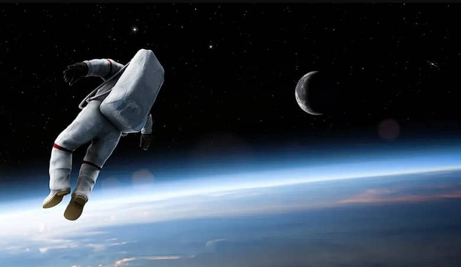
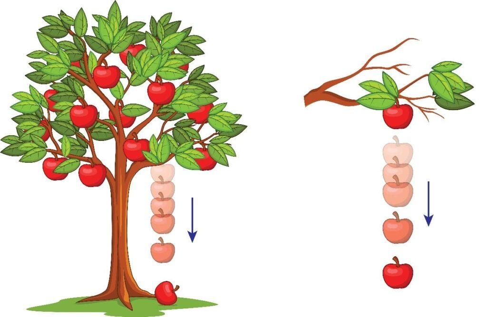
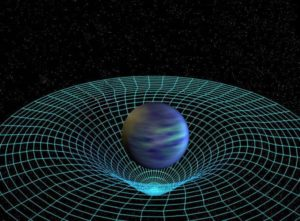
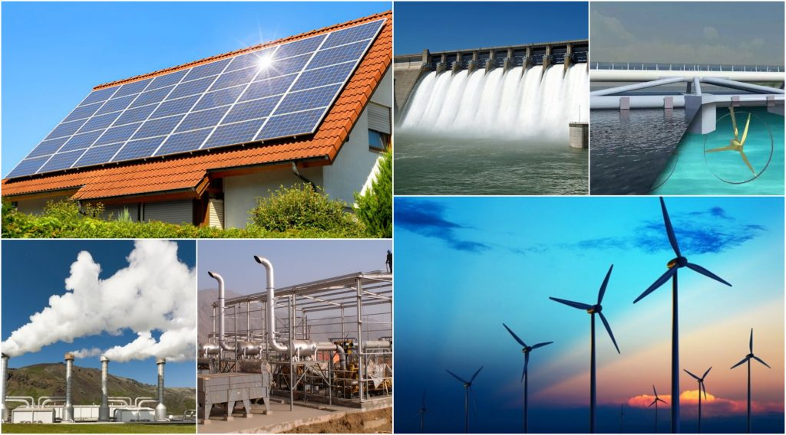

GRAVEDAD
¿Qué es la gravedad?

La gravedad o fuerza de gravedad es un fenómeno de la naturaleza por el cual los cuerpos que poseen masa se atraen entre sí de manera recíproca, con mayor intensidad conforme más masivos sean dichos cuerpos. Se trata de una de las cuatro interacciones fundamentales de la materia, y se la conoce también como “gravitación” o “interacción gravitatoria”.
La gravedad ha tenido un papel importante en convertir al Universo en lo que es. La gravedad es lo que hace que se unan entre sí trozos de materia, para formar planetas, lunas y estrellas. La gravedad es lo que hace que los planetas entren en órbita alrededor de las estrellas--como la Tierra que está en órbita alrededor de nuestra estrella, el Sol. La gravedad es lo que hace que las estrellas se junten entre sí para formar enormes galaxias giratorias.
La ley general de la física que rige la acción gravitatoria es (en la mecánica clásica) la Ley de gravitación universal, formulada por Isaac Newton en 1687. En ella el científico inglés explica que la misma gravedad que hace caer las cosas al suelo es la que mantiene a los planetas en su órbita respecto al Sol.
Unidades de medición de la gravedad
la gravedad se mide usualmente en Newtons (N) cuando nos referimos a la fuerza gravitatoria, y en m/s2 cuando se habla de la aceleración que provoca la atracción de un cuerpo masivo sobre otro con menor masa. Un ejemplo es la aceleración que provoca la Tierra sobre un objeto que se deja caer.
Algunos ejemplos que constatan el accionar de la fuerza de gravedad son los siguientes
- La aceleración que presenta un objeto en caída libre, como dijimos antes: al actuar sobre él la fuerza gravitatoria debido a la Tierra, la velocidad a la que se desplaza aumenta progresivamente en el tiempo.
- El caso contrario: un objeto arrojado con todas nuestras fuerzas en línea recta, sufrirá una desaceleración en su movimiento debido a la fuerza gravitatoria que actua en dirección hacia el centro de la Tierra, y que termina obligándolo a caer libremente.
- La orbitación de los planetas alrededor de astros de mayor tamaño, como los planetas en torno al Sol, o las lunas y satélites naturales en torno a los planetas. Así ocurre con nuestro mismo planeta y nuestra luna, por ejemplo.
- Los meteoritos que se acercan o chocan incluso con la Tierra u otros planetas, lo hacen atraídos por sus grandes masas.
Fórmula:
F=G(m 1 m 2)/r 2
Donde:
- F = fuerza gravitacional
- G = constante de gravitación universal
- 𝑚1m1 y 𝑚2m2= masas de los objetos
- r = distancia entre ellos
Efectos de la gravedad:

- Forma agujeros negros.
- Afecta el tiempo: en lugares con más gravedad, el tiempo pasa más lento (dilatación del tiempo gravitacional).
- Influye en la trayectoria de la luz (lente gravitacional).
- Es fundamental en la formación de estructuras cósmicas (galaxias, cúmulos, estrellas).
Espacio-tiempo
¿Qué es el espacio-tiempo?

El espacio-tiempo (también: espaciotiempo) es el modelo matemático que combina el espacio y el tiempo en un solo objeto continuo de cuatro dimensiones. En este espacio-tiempo es en donde ocurren todos los sucesos físicos del Universo, de acuerdo con la teoría de la relatividad de Einstein.
Dicha teoría también nos indica que el tiempo es un elemento que no puede separarse de las tres dimensiones espaciales existentes en nuestra realidad. Con base en esto, se explica que el tiempo depende directamente del estado de movimiento que posea el observador. Esta propiedad también es propia de las dimensiones espaciales, ya que nuestra percepción de las mismas se ve modificada cuando nuestra velocidad es mayor o menor.
A lo largo de los años, el modelo del tiempo y espacio se ha considerado como la cuarta dimensión, la cual, al igual que las otras tres, también es observable. La física cuántica se ha alimentado en gran medida de estas teorías para hallar explicación a diferentes fenómenos físicos que ocurren en el universo.
| |
|
| Espacio-tiempo |
Unión del espacio y tiempo en una sola entidad de 4 dimensiones. |
| Curvatura del espacio-tiempo |
Causada por la masa; produce la gravedad. |
| Dilatación del tiempo |
El tiempo pasa más lento donde la gravedad es más fuerte. |
| Aplicación real |
Corrección de relojes GPS, física de agujeros negros, cosmología. |
Dilatación del tiempo
.jpg)
Dentro de la teoría de tiempo y espacio, la dilatación del tiempo es un fenómeno que afecta tanto al observador del objeto en movimiento como al objeto en sí. Por ejemplo, un automóvil que recorre una carretera a 65 km/h, con respecto a un observador inmóvil, será observado como un vehículo que va a 190 km/h por otro conductor que venga en dirección contraria a la misma velocidad. Este fenómeno es detectable solamente bajo algunas condiciones específicas, más, sin embargo, todos estamos sujetos a dicho fenómeno permanentemente, aunque en una escala mucho más baja.
Tipos de dilatación del tiempo:
1.Dilatación por velocidad (Relatividad especial)
- Cuanto más rápido te mueves, más lento fluye el tiempo para ti comparado con alguien que está en reposo.
- A velocidades cercanas a la velocidad de la luz, este efecto se vuelve muy notorio.
2.Dilatación gravitacional del tiempo (Relatividad general)
- El tiempo también pasa más lento cerca de un objeto con mucha gravedad (como un planeta masivo o un agujero negro).
- Más lejos de la fuente de gravedad, el tiempo fluye más rápido.
¿Por qué ocurre?
Según Einstein:
"La gravedad y la aceleración afectan el espacio-tiempo. Y cuando el espacio-tiempo se curva, también se curva el tiempo."
Esto ha sido comprobado experimentalmente con relojes atómicos en aviones, montañas y satélites.
¿Qué es la energía?
.jpg)
La energía es la capacidad de una fuerza de generar una acción o un trabajo. Toda fuerza que realiza un trabajo sobre un objeto provocará un cambio de energía en él.
El término energía (del griego ἐνέργεια enérgeia, ‘actividad’ ‘operación’; de ἐνεργóς energós, ‘fuerza de acción’ o ‘fuerza de trabajo’) tiene diversas acepciones y definiciones, relacionadas con la idea de una capacidad para obrar, surgir, transformar o poner en movimiento.
La energía también puede almacenarse para ser usada cuando se la requiere. Por ejemplo, las pilas o baterías son elementos que almacenan energía química y la transforman en energía eléctrica. Incluso los seres vivos almacenan energía a través de lo que conocemos como “grasa” (lípidos) o azúcares. Mediante diversos procesos, el organismo transforma la energía química de estas sustancias en otros tipos, como puede ser la energía calórica necesaria para mantener la temperatura corporal.
Tipos de energía

- Energía eléctrica
- Es la energía que existe en presencia de partículas cargadas eléctricamente. El tipo de partículas más común es el electrón, que produce a su alrededor un potencial eléctrico. Cuando otros electrones se mueven a través de este potencial, adquieren energía eléctrica. Lo que conocemos como corriente eléctrica es una gran cantidad de electrones moviéndose a través de una diferencia de potencial.
- Energía cinética
- Es la energía que poseen los cuerpos que están en movimiento, que tienen una velocidad. Si un objeto está quieto, su energía cinética es nula.
- Energía potencial
- Es la energía contenida en un sistema físico o en un objeto y que puede luego transformarse en otras formas de energía (como cinética, calórica, etc). Es energía “en potencia”.
- Energía magnética
- Es la energía que generan las corrientes eléctricas y los materiales magnetizados (imanes).
- Energía eólica
- Es la energía producida por el empuje del viento.
- Energía solar
- Es la energía que emite el Sol en forma de radiación calórica y lumínica a través del espacio hacia los planetas del Sistema Solar.
- Energía atómica o nuclear
- Es la energía que proviene de las fuerzas que mantienen unidas a las partículas subatómicas: las fuerzas nucleares fuertes y débiles. También se llama así a la energía eléctrica obtenida del calor liberado por las reacciones de fusión o fisión atómica en una central nuclear.
- Energía química
- Es la energía que interviene en las uniones atómicas y las reacciones a nivel molecular, indispensable para la vida, ya que mantiene en marcha el metabolismo de los seres vivos.
- Energía calórica o térmica
- Es la energía que se da con transferencias de energía causadas por las diferencias de temperatura. La temperatura, a su vez, es una medida de la energía cinética de las moléculas que componen un cuerpo.
- Energía hidráulica
- Es la energía que se obtiene del movimiento de grandes masas de agua, como pueden ser ríos, mareas o caídas de agua. Las represas eléctricas funcionan con energía hidráulica.
- Energía luminosa
- Es la energía electromagnética producida por ondas electromagnéticas en el rango visible (es decir, la luz).
- Energía sonora
- Es la energía que producen las ondas del sonido.
¿Por qué es importante?
Todo lo que ocurre en el universo implica transferencia o transformación de energía.
Entenderla es esencial en física, biología, química, ingeniería, ecología y más.
Principales formas de energía
| Tipo de energía |
Descripción breve |
Ejemplo |
| ⚡ Energía cinética |
Energía del movimiento |
Un auto en marcha |
| 🧱 Energía potencial |
Energía almacenada por posición o estado |
Agua en una represa |
| 🔥 Energía térmica |
Energía asociada al calor |
Estufa, fuego |
| 💡 Energía eléctrica |
Energía del flujo de electrones |
Corriente eléctrica, enchufes |
| ☀️ Energía radiante |
Energía de la luz y las ondas electromagnéticas |
Luz solar, microondas |
| ⚛️ Energía nuclear |
Energía almacenada en el núcleo de los átomos |
Reactores nucleares |
| 🧬 Energía química |
Energía en los enlaces entre átomos y moléculas |
Alimentos, baterías, gasolina |